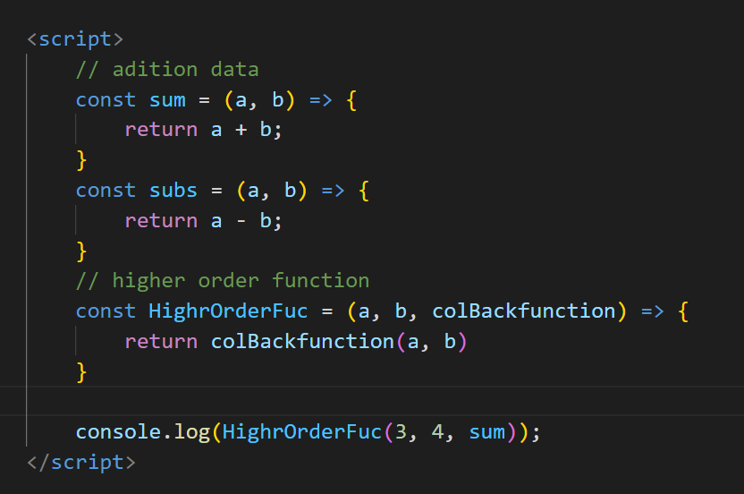

13 Difference Between Callback Function VS Higher-Order Functions in JavaScript ?
A higher-order function is a function that takes another function(s) as an argument(s) and/or returns
a
function to its callers.
A callback function is a function that is passed to another function with the expectation that the
other
function will call it.
